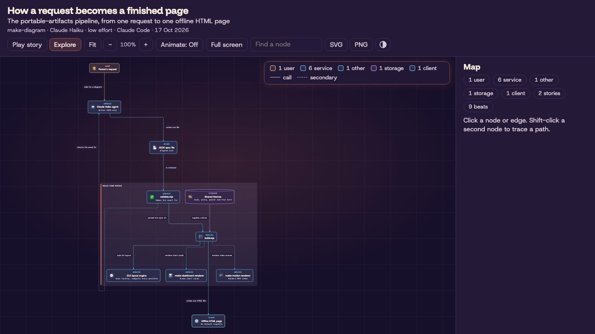
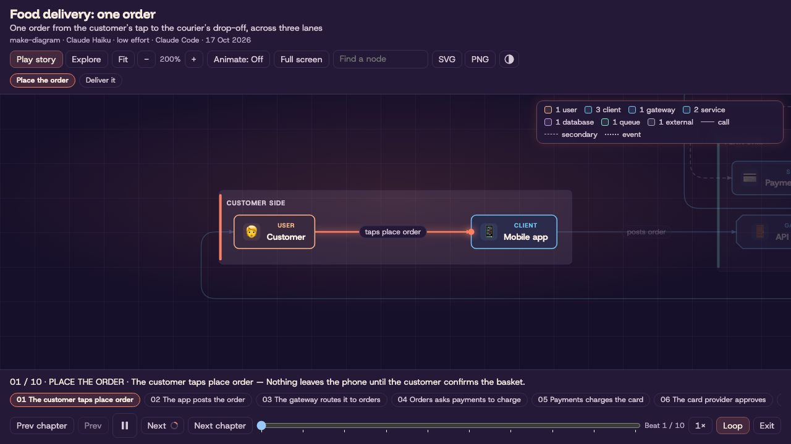
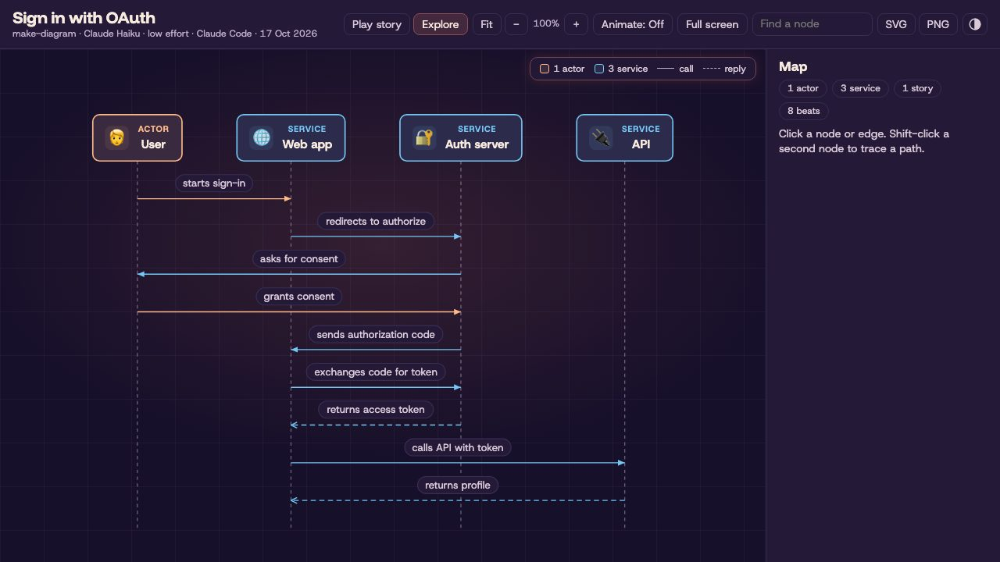
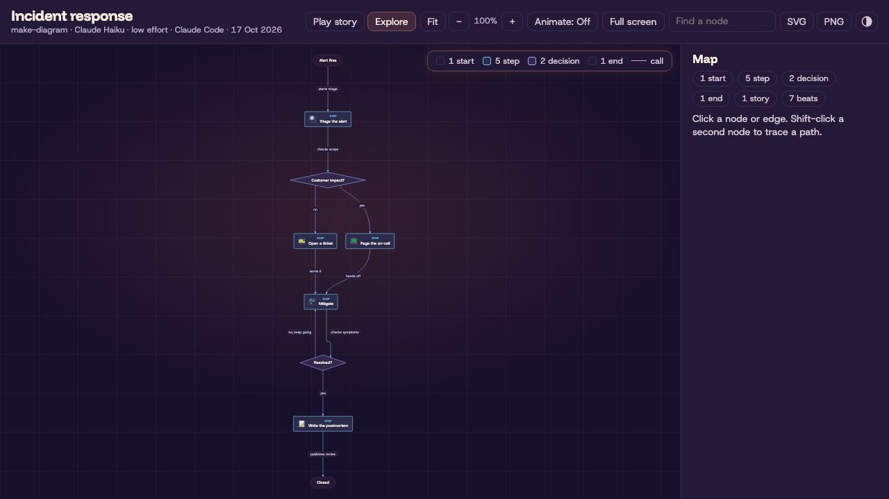
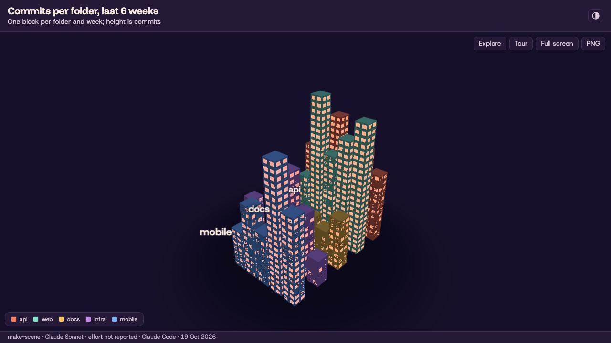
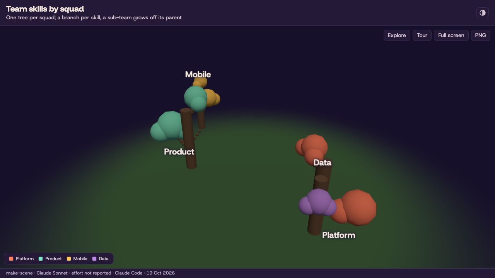
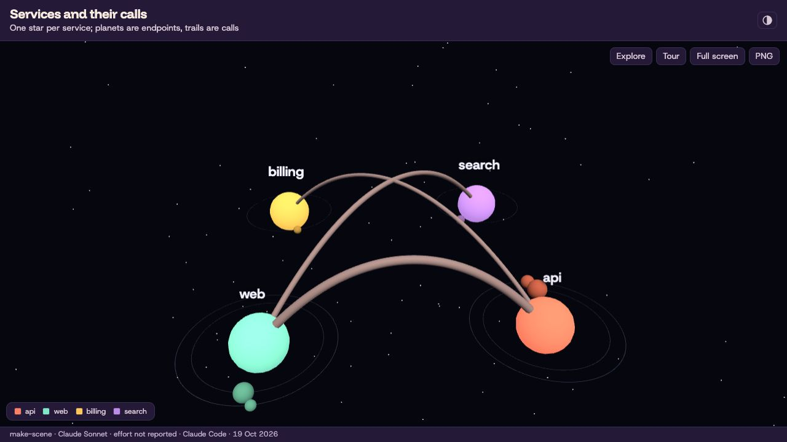
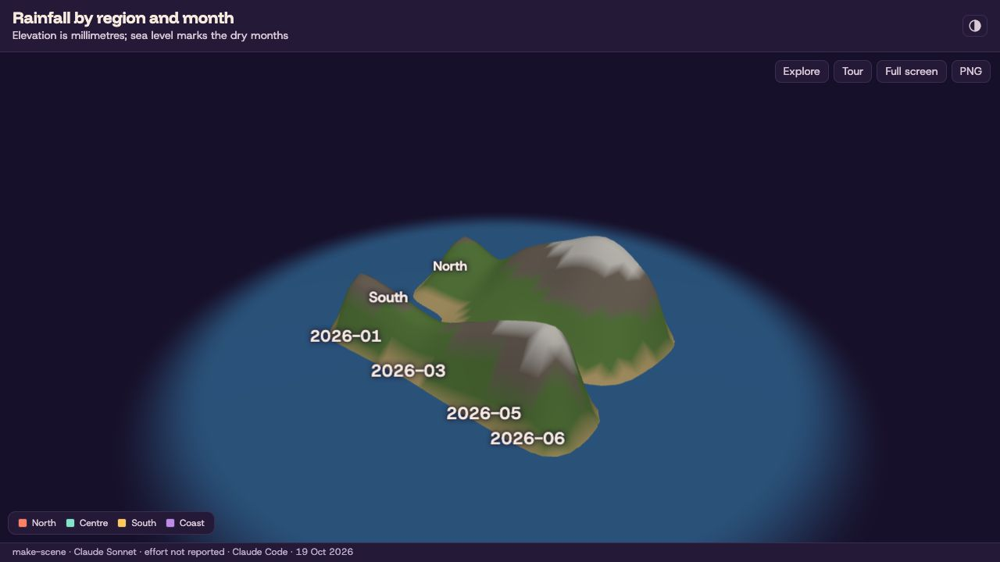
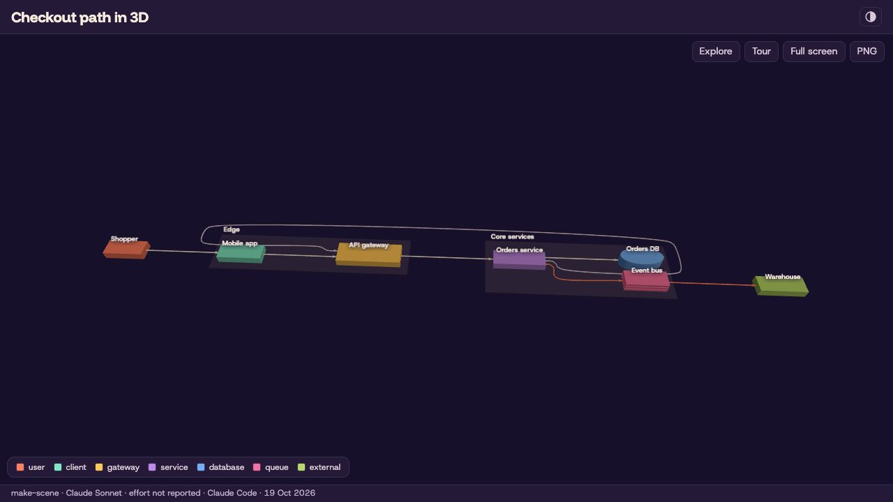
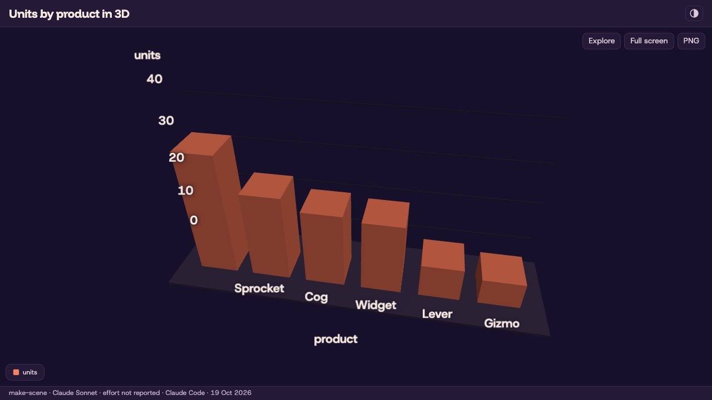

01 Overview
Five agent skills that do what hosted "artifact" features do, without a cloud, an account or a particular model. You describe what you want; the agent writes a small JSON spec; local scripts check it and build one self-contained file you can open offline.
- make-dashboard: a prompt and a data file become KPI tiles and charts (eleven chart kinds, live reload). Every chart shows its SQL, row count and refresh time.
- make-diagram: a prompt becomes an architecture diagram, flowchart, sequence diagram or state diagram, with zoom, hover tracing and a story player that follows a request hop by hop.
- make-explainer: a branch, an idea or a plan becomes a page or slide deck of verdicts, numbers, files changed, timelines and a test checklist that remembers its ticks. A linter rejects filler phrases and leftover placeholders before it builds.
- make-motion: a prompt becomes a live preview with a scrubber and a 1080p MP4. It stays silent unless you ask for sound: music from a file you supply, short synthesised sound cues, or narration made locally with Kokoro.
- make-scene: your data becomes an explorable 3D city, forest, galaxy or terrain, or a diagram or dashboard chart is lifted into 3D. Orbit, hover for exact values and follow a camera tour; the build offers the other worlds with a one-line command to switch.
Pages and clips use the dusk theme unless you pick press, poster or one of four older themes. The skills work with any agent that can read files and run shell commands, and an installer ports them to Codex, GitHub Copilot, Gemini CLI and Claude Code. Every page names the model, effort level and agent that wrote it, and each skill's doctor script reports anything missing before the first build.
The design is spec-first: the model writes one small JSON spec, and deterministic Node scripts do everything else. Field-level errors from the validator drive the retry loop.
02 See it in action
Real outputs, not mock-ups: each artifact below was produced by an agent (Claude Code) from the exact prompt shown, following the skill's SKILL.md. The card also shows the one follow-up line that asked for narration, because audio is never added unasked.
/make-motion — a 15-second 1080p explainer from one prompt, narrated on request
Download the MP4 ↓ (H.264 + AAC voiceover)
The exact prompt
The follow-up (audio is opt-in)
Show the generated motion.json spec
/make-dashboard — a growth dashboard from two CSV files
The exact prompt
Show the generated dashboard.json spec
Generated by Claude Code following SKILL.md from the prompt shown, then the follow-up, which added only the audio field. The clip was later re-rendered in the new themes (see the note under the Gallery). See all samples →
02b Gallery
More real samples from all five skills. Open any page full screen, read its spec, or copy the prompt and run it yourself.
One look per theme
Dusk

Rounded cards, a dark violet ground and coral accents. The default.
Dashboards
Growth overview

The exact prompt
Support operations

The exact prompt
Web traffic deep dive

The exact prompt
Product performance

The exact prompt
Motion
Audio is opt-in. Each clip was first rendered silent from the prompt shown, then given the one-line follow-up under it. The agent wrote the narration, synthesised it locally with Kokoro and changed only the spec's audio field; the clips were later re-rendered in the new themes. Press play to hear it.
From prompt to dashboard
The exact prompt
The follow-up (audio is opt-in)
Launch announcement
The exact prompt
The follow-up (audio is opt-in)
SQL guard explainer
The exact prompt
The follow-up (audio is opt-in)
Quarterly highlights
The exact prompt
The follow-up (audio is opt-in)
Explainers and diagrams
Portable Artifacts explainer
One page that explains this plugin: what each skill does, how to install it, the eval results as a chart, the pipeline as an embedded make-diagram figure, and the motion clips above as playable videos.
Portable Artifacts deck

The same story as a slide deck. Arrow keys or Space move between slides, O opens the outline, and slide 4 plays a make-motion clip. Switch the theme above to open the same deck spec built with --theme press or --theme poster.
How a request becomes a finished page

The pipeline from request to page, laid out by ELK. Play story (or P) opens beat 1; Space plays it, following a request hop by hop with a travelling dot and captions. Use Explore to click a node for what it sends and receives.
Food delivery: one order

One order across three lanes: customer side, platform and partners, with an emoji on every node. Two stories, "Place the order" and "Deliver it", start playing as soon as the page opens. Click any node in Explore for what it does.
Sign in with OAuth

A sequence diagram with an eight-beat story through the authorization code flow. Each beat lights one message; replies play against the arrow.
Incident response

A flowchart from the alert to the published postmortem. Its seven-beat story follows one real outage down the yes branch, so the no branch stays dimmed.
3D scenes
Commits per folder as a city

Five folders become five districts, one block per week, and height is commits. Drag to orbit, hover a block for its exact value, and open the Tour, then Play, for a two-stop camera tour: the API leads early, then web spikes in week 32. The numbers are sample data.
Team skills as a forest

One tree per squad with a branch per skill; Mobile grows off Product and Data off Platform because their rows name a parent. Leaf size is the number of people. The tour opens on Product, the biggest tree. The numbers are sample data.
Services and their calls as a galaxy

One star per service, planets for its endpoints, and a light trail for every link, with its calls per second on hover. The tour starts at web, where two trails leave the storefront, then moves to billing behind the API. The numbers are sample data.
Rainfall as a landscape

Four regions by six months, as a full grid, become hills and valleys: elevation is millimetres of rain, and sea level marks the dry months. The tour stops on the North in May, the wettest month on the map. The numbers are sample data.
A make-diagram diagram lifted into 3D

The order-fulfilment diagram from make-diagram laid flat on a floor, its nodes as blocks and its edges as tubes. With no tour of its own, the page replays the diagram's two stories along its edges: nine beats from the shopper's tap to the warehouse. Needs make-diagram installed beside the skill.
A make-dashboard chart lifted into 3D

One chart from a make-dashboard file, units by product from a CSV, redrawn as 3D bars with exact values on hover. The spec names the dashboard and the chart id, and the data stays beside it. Needs make-dashboard installed beside the skill. The numbers are sample data.
Dashboards and motion clips were written by Claude Code from the prompt shown; explainers and diagrams from a fact sheet by Claude Haiku at low effort. The 3D scene specs were written by Claude Code (Sonnet) as make-scene's reference examples; the city, terrain and dashboard copies add extra sample rows. All were built offline with the plugin's own scripts.
How these samples were made
Every dashboard and motion sample was generated by Claude Code (Sonnet) following SKILL.md from the prompt shown; each motion clip then took the one-line follow-up, which added only the audio field. The explainers and the pipeline diagram were written by Claude Haiku at low effort from a fact sheet, and a review pass corrected facts and layout in their specs before the build. The pipeline diagram's stories, emoji and details were written by hand for the stories release (2026-10-14); its nodes and edges are the Haiku original. The food delivery, OAuth and incident diagrams were written whole by Claude Haiku at low effort, stories included.
The dashboards were rebuilt on 2026-10-15 (the diagrams were rebuilt again on 2026-10-19, see below) with the templates of that day (Geist type, favicon, icon theme toggle, provenance line). Their footers read as the samples were made, passed as build flags: the dashboards --model "Claude Sonnet" --agent "Claude Code" (effort was not recorded, so it reads "not reported"), all four diagrams --model "Claude Haiku" --effort low --agent "Claude Code". The footer date, 15 Oct 2026, is the build day, pinned with SOURCE_DATE_EPOCH. The dashboard and diagram specs are unchanged, except that the OAuth spec's theme field was added after it was first passed on the command line. The dashboards were rebuilt from the sample data in the plugin's eval/fixtures/data folder, so their "refreshed" times show the rebuild.
The explainer page and deck were rebuilt again on 2026-10-17, on the design-refresh branch, in the new default theme dusk: new type (Funnel Display, Host Grotesk, Commit Mono), seeded art in the page hero and on the deck's first and last slides, and a new layout. The flags are the same, --model "Claude Haiku" --effort low --agent "Claude Code", and the footer date, 17 Oct 2026, is pinned with SOURCE_DATE_EPOCH. The page spec names no theme, so it now builds in dusk (the earlier build passed editorial on the command line). The deck spec's theme field changed from blueprint to dusk; the press and poster decks are that spec built with --theme press and --theme poster. Both explainer specs gained hand-written section labels (the label field) on an earlier branch, and a few long titles were shortened to fit the 8-word soft cap.
On 2026-10-19 every explainer, deck, diagram and motion sample was rebuilt in all three new themes, dusk, press and poster, and the Theme switch at the top of the Gallery swaps between them. Dusk is the default and sits at the original paths; press and poster live in press/ and poster/ folders beside it, and the diagrams keep one folder per theme. The diagrams were built from their existing specs with --theme; the pipeline diagram's two lines that named the old themes were reworded. Later that day the diagram pages and their thumbnails were rebuilt again from the same specs and flags, with Bézier edges and the new player chrome (an icon Play/Pause button, a ring that fills while a step holds, slightly faster playback). The four motion clips were re-rendered from their existing specs with the same voiceover files: the spec's own hex colours were replaced so the theme sets the page, text and card colours (card, line and chart colours are that theme's token values, so each theme has its own committed spec: the dusk one at the original path, press and poster in their folders), the first and last scenes use background: "art", and the first text in each scene has role: "title". The page and deck embed the clips of their own theme, and the 4-second clip on both is a new two-scene spec rendered per theme (not committed; its two scenes are "One JSON file, one video" and a counter from 0 to 18). All builds pass --model "Claude Haiku" --effort low --agent "Claude Code" with SOURCE_DATE_EPOCH pinned to 17 Oct 2026. The two GIFs in the usability guide were re-rendered on 2026-10-17 from make-motion's q3-revenue and how-it-works examples. Thumbnails are 1280×720 (dusk dark scheme, press and poster light) and show the page as it loads; the clip thumbnails are a frame near the start.
The six 3D scenes were built on 2026-10-19 from the specs in make-scene's references/examples folder, copied beside each page as scene.json (the two lifts also carry the diagram, dashboard and CSV they name). The city, terrain and lift-dashboard samples have more rows than the examples so that the scene reads at gallery size; the numbers are sample data, not measurements. Each build passes --model "Claude Sonnet" --agent "Claude Code" (effort was not recorded, so the footer reads "not reported") with SOURCE_DATE_EPOCH pinned to 19 Oct 2026, and passed check.mjs. Only the dusk page is committed for each scene, so "Open full page" always opens it; the Theme switch changes the thumbnail only, and the press and poster thumbnails come from the same spec built with --theme press and --theme poster. The thumbnails are screenshots taken 1.5 seconds after load with software WebGL.
03 Problem & why it's needed
Hosted artifact features lock you to one vendor, need an account and the network, and regenerate whole pages of code for every small tweak — so "make the second scene slower" can change everything else too.
--image-api hero image.04 Install
Claude Code — add the marketplace, then install portable-artifacts
/plugin marketplace add abhijitbansal/claude-skills/plugin install portable-artifacts@claude-skillsThen ask for a dashboard, a diagram, an explainer, a 3D scene or a video, or call a skill directly: /make-dashboard …, /make-diagram …, /make-explainer …, /make-scene … or /make-motion …. On first use the agent runs the skill's doctor and, once you agree, installs the dependencies (npm ci inside the skill folder; npm ci --omit=dev for make-dashboard, make-diagram, make-explainer and make-scene).
Install with npx skills
npx skills add abhijitbansal/claude-skills --skill make-dashboard make-diagram make-explainer make-motion make-scenenpx skills add abhijitbansal/claude-skills --skill make-dashboard make-diagram make-explainer make-motion make-scene -a claude-code codex github-copilot -yThe second form installs to Claude Code, Codex and GitHub Copilot without prompting. On first use the agent runs the skill's doctor and, once you agree, npm ci in the skill folder (npm ci --omit=dev for make-dashboard, make-diagram, make-explainer and make-scene). make-explainer needs make-diagram and make-dashboard beside it, and npx skills does not resolve dependencies, so name all three, as above. Without them a section that needs one fails validation and prints that exact command.
Codex, GitHub Copilot, Gemini CLI — or Claude Code without the marketplace
Each host reads skill folders from its own directory, and the skill itself is the slash command. The installer copies all five skills to the right place and installs their dependencies. It reads each skill's requires list, so installing make-explainer or make-scene also installs make-diagram and make-dashboard.
git clone https://github.com/abhijitbansal/claude-skillsnode claude-skills/plugins/portable-artifacts/bin/install.mjs codex # ~/.agents/skillsnode claude-skills/plugins/portable-artifacts/bin/install.mjs copilot --project . # ./.github/skillsnode claude-skills/plugins/portable-artifacts/bin/install.mjs gemini # ~/.gemini/skills + commandsnode claude-skills/plugins/portable-artifacts/bin/install.mjs claude # ~/.claude/skills, no marketplaceHosts and where skills land
install.mjs claude · user ~/.claude/skills · project .claude/skills · invoke /make-dashboard …install.mjs codex · user ~/.agents/skills · project .agents/skills · invoke $make-dashboard … (or /skills)install.mjs copilot · user ~/.copilot/skills · project .github/skills · invoke /make-dashboard …install.mjs gemini · user ~/.gemini/skills + ~/.gemini/commands/*.toml · project .gemini/… · invoke /make-dashboard ….agents/skillsinstall.mjs agents · user ~/.agents/skills · project .agents/skills · invoke host-specificTested hosts
Claude Code and GitHub Copilot CLI were tested live. Codex CLI passed an earlier eval (dashboard 10/10, motion 6/10; four prompts hit a usage limit). Gemini CLI install paths were checked against its documentation but not run live. make-scene: 10/10 valid builds on the first run (Claude Haiku in Claude Code, median 1.5 validate runs, median 40 s), in eval/results/summary-scene-2026-10-19.md.
Test details
Claude Code and GitHub Copilot CLI 1.0.98 ran one non-interactive pass per skill on 2026-10-15: each picked up its skill, ran the doctor, validated and built a page. The browser check (check.mjs) was not run by an agent there, and consent was granted in the prompt, so the ask-first step was not exercised. Codex CLI 0.145.0 ran an earlier eval on 2026-10-10: dashboard 10/10, motion 6/10, with the last four motion prompts stopped by the account's usage limit. Results are in eval/results/ (summary-full-2026-10-10.md, summary-portability-copilot-2026-10-15.md, summary-install-targets-2026-10-15.md).
Installer flags
git pull updates itnpm ciAny other agent
If it can read files and run shell commands: copy a skill folder into your project (together with its shared/ folder), run npm ci inside it (npm ci --omit=dev for make-dashboard, make-diagram, make-explainer and make-scene; copy make-diagram and make-dashboard too if you use make-explainer or lift with make-scene), and add one line to your AGENTS.md (or .github/copilot-instructions.md).
05 Requirements
doctor.mjs (optional)in each skill, needs only Node: lists what is missing with the fix for your OS; the agent runs it first and asks before installingnpm ci (once)in each skill folder; the agent runs it through the doctor once you agree (--omit=dev is enough for make-dashboard, make-diagram, make-explainer and make-scene).mp4 needs nothing); make-scene — make-diagram only to lift a diagram and make-dashboard only to lift a chart. git on PATH for gather.mjsnpx playwright install chromium inside the skill folder (Linux: add --with-deps); falls back to an installed Google Chrome. make-diagram, make-explainer and make-scene build without a browser; only the optional check.mjs uses one (needs a full npm ci) and skips cleanly without it, printing the doctor command that fixes itPATHmake-motion only — brew install ffmpeg (macOS) / winget install Gyan.FFmpeg (Windows) / sudo apt-get install ffmpeg (Linux), or set FFMPEG_PATH (≥ 4.4 for audio tracks)make-motion tools by OS
Playwright itself comes with npm ci. Run the Chromium download inside the make-motion skill folder, so it matches the Playwright version the lockfile pins.
macOS (Homebrew)
brew install nodebrew install ffmpegnpx playwright install chromiumRun the npx line inside the make-motion skill folder.
Windows (PowerShell)
winget install OpenJS.NodeJS.LTSwinget install Gyan.FFmpegnpx playwright install chromiumOpen a new terminal after winget so node and ffmpeg are on PATH. Run the npx line inside the make-motion skill folder; if PowerShell refuses npx.ps1 (scripts disabled), use npx.cmd playwright install chromium. choco install ffmpeg or scoop install ffmpeg also work.
Linux (Debian/Ubuntu)
sudo apt-get install ffmpegnpx playwright install --with-deps chromiumRun the npx line inside the make-motion skill folder. Node 20+ from nodejs.org or a version manager; distro nodejs packages are often older. --with-deps installs the system libraries Chromium needs (asks for sudo).
06 Usability guide
/make-dashboard — a dashboard from a data file
You say "Revenue by region and the monthly trend from data/sales.csv". The agent inspects the data, writes dashboard.json (sources, SQL queries, KPIs, charts), validates it, and builds one offline index.html. Every chart expands to show its SQL, row count and refresh time. Rerun one command to refresh — no LLM involved. Sources: CSV, Parquet, JSON, DuckDB, SQLite, Postgres and MySQL.
pair to show two side by side.paper (default), blueprint, editorial, ink, and the newer dusk, press and poster, plus an icon toggle on the page that cycles Auto, Light and Dark.--interval. A failed build shows a banner and keeps the last good page.node <skill-dir>/scripts/serve.mjs --watch dashboard.json --open

/make-diagram — an architecture, flow, sequence or state diagram
You say "Draw the checkout request path from the browser to the orders DB". The agent writes diagram.json (a title, a type, nodes and edges, or participants and messages), validates it, and builds one offline HTML page under ~/.agent/diagrams/. Validation lays the diagram out and lints the geometry, so a spec that passes is buildable. "Add a queue between the API and the worker" changes a few fields.
architecture (nested groups, 11 node kinds), flow, state and sequence (frames and notes).0 or double-click to fit, F full screen, hover to trace a node's edges, A for edge-flow animation, light and dark, SVG and PNG export.P to play the story: a moving camera and a travelling dot, one beat at a time. Space plays and pauses, arrows step the beats, Esc leaves. Beats come from the spec's stories or are built from the layout.E, click a node for its details, shift-click a second node for the route between them, / to find.icons.mjs search./make-explainer — a recap, checklist, explainer or slide deck
You say "Recap this branch for review, with a manual test checklist". A script reads the git branch (commits, files changed with line counts, test files) and scaffolds an explainer.json with the numbers, file list and timeline filled in. The agent replaces each TODO: with prose, validates, and builds one offline HTML page under ~/.agent/diagrams/. Validation fails on leftover placeholders, filler phrases such as "leverage" or "seamless", numbered titles, and (for slides) a slide that is too full. Emoji are allowed; dense emoji only warn. Section titles state the finding, not a label; the short label is what the contents list shows.
recap, checklist, concept and slides, each with a working example in the skill.label of up to 4 words for the contents list; validation warns, and never fails, over the soft caps (title 8 words, label 4, paragraph 3 sentences or 60 words, text section 120, card text 30, list item 20, page prose 900, tl;dr 3 points).O for an outline, #slide-3 deep links, one slide per printed page.dusk (default): Funnel Display, warm gradients, grain; press: Young Serif on bone paper, for dense docs, long reads and branch recaps; poster: condensed capitals, lime and orange, for launch decks and pitches. A theme you name wins (--theme poster or "use poster"). Otherwise the agent picks one from the prompt and says which and why in one line; if the prompt fits two equally it asks once, and if it cannot ask it uses dusk. paper, blueprint, ink and editorial are used only when named.build.mjs --image-api <https-endpoint> replaces the page hero's art with a picture from an image service you choose. Off by default. It sends the page title and subtitle off your machine to that host, needs your key in PA_IMAGE_API_KEY, and each build is one request your service may bill. Page hero only, in dusk, press or poster; a deck or an older theme is refused before anything is sent.node <skill-dir>/scripts/gather.mjs git --out facts.jsonnode <skill-dir>/scripts/scaffold.mjs recap --facts facts.json --out explainer.jsonnode <skill-dir>/scripts/validate.mjs explainer.jsonnode <skill-dir>/scripts/build.mjs explainer.jsonnode <skill-dir>/scripts/build.mjs explainer.json --model "Claude Opus 5.5" --effort high --agent "Claude Code"/make-motion — an animated explainer
You say "8-second clip: Q3 revenue up 18%, then a bar chart of Q1–Q3". The agent writes motion.json, validates it, opens a live preview with a scrubber, and renders a 1080p MP4 that comes out the same every time. "Slow scene 2" changes one field, not the whole video.
Audio is opt-in. Say "with background music from music.mp3" or "with a voiceover reading it". Narration is made locally with Kokoro, so no file is needed for it. Short UI sounds need no file either: a cues list of pop, click, whoosh, chime and impact is synthesised at render time, gives the same bytes every time, and the render ends with a line giving the integrated loudness and true peak.
Polish. Shapes and text can name theme colour tokens (surface, line, accent, cat1 to cat6 and more) that follow the theme; a rect can be an elevated card; a line takes a round cap and an arrow head. Charts default to about five ticks per axis, no tick marks, no vertical gridlines, rounded bars and 4 px round lines. A scene can crossfade over the previous one in 0.4 s, and a text can type itself out at 0.035 s per character.
Texture is opt-in. A vignette and static film grain (0 to 0.15) can go over every scene. They slow rendering: measured at 1920x1080 on one Apple-silicon Mac, about 17 to 33 ms per frame with none, 42 ms with the vignette, 84 ms with grain and 184 ms with both.
Themes. Themes follow the same rules as make-explainer, and a spec that names none renders in dusk. Colours a spec sets still win. For a themed look, mark a heading "role": "title" and give a scene "background": "art".


/make-scene — your data as a 3D city, forest, galaxy or terrain
You say "Show our commits per week per folder as a 3D city, with a tour of the busiest weeks". The agent gets the rows (a script reads the git history, or it uses your CSV or JSON), writes scene.json (a title, data or a lift, and a short camera tour), validates it, and builds one offline three.js page. It then runs check.mjs, which opens the page at desktop and phone width and fails on a blank canvas or a tour that cannot finish. The agent never writes three.js, coordinates, CSS or HTML, and the spec accepts none. Switching to another world is one command that spends no model tokens.
city (a district per group, height is value), forest (a tree per group, parents grow sub-trees), galaxy (a star per group, links are trails) and terrain (a group by time grid as a landscape).Space for the tour, F for full screen, PNG export. Height scales start at zero. Without WebGL the page shows the data table, or the 2D drawing for a lift.scene section, up to 4 per page.node <skill-dir>/scripts/rows.mjs git --weeks 12node <skill-dir>/scripts/validate.mjs scene.jsonnode <skill-dir>/scripts/build.mjs scene.json --out ./scene.htmlnode <skill-dir>/scripts/build.mjs scene.json --world forest --out ./scene.htmlnode <skill-dir>/scripts/check.mjs scene.htmlEvery page: favicon, theme toggle and who made it
Each page has an inline favicon and a sun, moon or auto button that cycles Auto, Light and Dark, even when the browser blocks storage. The make-motion preview is a dark-only local tool, so it has no toggle. A footer line (under the title in a diagram) and a <meta name="generator"> record the model, effort level and agent that made the page.
Fonts per theme and the stamp fields
Fonts are bundled with the skills: dusk Funnel Display, Host Grotesk and Commit Mono; press Young Serif, Schibsted Grotesk and JetBrains Mono; poster Big Shoulders Display, Familjen Grotesk and Martian Mono; the older themes Geist and Geist Mono, with Bricolage Grotesque headings in ink and Newsreader and Atkinson Hyperlegible in editorial.
The agent sets generatedBy: { model, effort, agent } in the spec, or you override per field with --model, --effort and --agent on the build. Each is 1 to 60 characters from A-Za-z0-9 ._:/()+-; anything else fails validation. A field nobody knows reads "not reported", never a guess. In make-dashboard, put generatedBy in dashboard.json, because serve.mjs --watch takes no flags. make-motion writes the stamp into the MP4's comment tag and, when the model is reported, into artist.
Before the first build: doctor
Each skill has a scripts/doctor.mjs that needs only Node, so it runs before npm ci. It lists what is missing, with the size and the fix for your OS. The agent runs it first, tells you what it found in one message and asks once; on yes it installs what it reported. Anything that needs sudo or has no automatic fix comes back to you as the exact command to run (in Claude Code, prefix it with !). On no, the skill does what it can without it.
Doctor flags and exit codes
--for takes a spec .json (every skill; only make-explainer and make-scene add sister skills from it: make-explainer for its diagram and chart sections, make-scene make-diagram or make-dashboard when the spec lifts one), check (make-diagram, make-explainer and make-scene) or voiceover (make-motion). --fix resolves its ids against the same --for: an id that target does not list is refused as "unknown id", and without --for it accepts every id the skill could need. Under --for check, dev_deps (Playwright) and chromium are required. make-explainer's browser for a motion section is motion_chromium, installed through make-motion. --fix exits 1 when any requested id is refused, skipped, failed, still missing or installed elsewhere.
node <skill-dir>/scripts/doctor.mjs --jsonnode <skill-dir>/scripts/doctor.mjs --json --for explainer.jsonnode <skill-dir>/scripts/doctor.mjs --json --for checknode <skill-dir>/scripts/doctor.mjs --fix node_modulesnode <skill-dir>/scripts/doctor.mjs --for check --fix dev_deps,chromiumCodex syntax
Codex invokes skills with $: $make-dashboard …, $make-diagram …, $make-explainer …, $make-scene … or $make-motion … (or browse with /skills).
07 Security model
Dashboards run model-written SQL — read-only, boxed in
Each query must parse (DuckDB's own parser) as a single SELECT, and an allowlist over its syntax tree lets it read only the declared sources and its own CTEs: no query(), read_*, duckdb_*, system catalogs or sqlite_*/postgres_*/mysql_* bridges. It runs wrapped in a row limit and a timeout, against a DuckDB connection locked to the exact declared files (allowed_paths, external access off, configuration locked). Sources must live under the spec's folder unless you pass --allow-outside. For Postgres and MySQL, READ_ONLY only limits DuckDB: use a read-only database role. Credentials come only from environment variables and are scrubbed from errors and results as defence in depth; the SQL allowlist is the control.
Built pages embed the query results
Publishing index.html publishes the data.
No network from specs
Chart url/data/usermeta keys are rejected at any depth; motion colours can't be url(); pages run under a CSP without unsafe-eval; the renderer aborts any non-local request; local servers bind 127.0.0.1 and check the Host header.
The optional hero image sends text off your machine
Only make-explainer's --image-api <https-endpoint> flag uses the network, and only when you pass it. It sends the page title and subtitle to the host you name, with your key from PA_IMAGE_API_KEY, and the build says so before it sends. Each build with the flag is one request your image service may bill. The key is never written to the page, the reply must be a PNG, JPEG or WebP image, and any failure stops the build.
08 Licences
Everything this plugin depends on is open source.
@duckdb/node-api)MITelkjs)EPL-2.0Not used, by design: Remotion and GSAP (free to use, but not under OSI licences).
09 What's inside
Skills
Tooling
--json, --for, --fix); installs only what you agree to.~/.claude paths and bash-only commands.Explore the other plugins
Second Wind
Run Claude overnight; auto-resume after 5-hour limit resets
prompt-craft
Sharpen rough prompts into specs, suggest follow-up commands
ios-dev
Build iOS apps, screenshot remotely, release to App Store
core-workflow
Opinionated dev workflow: commit + share + team up
linear-pm
Linear issues → code, branches, PRs — autonomous end-to-end
Session mods
test-board and session-compass: test results and session status above the prompt
Cache Clock
See your Copilot prompt cache expire; get asked before a costly cold send